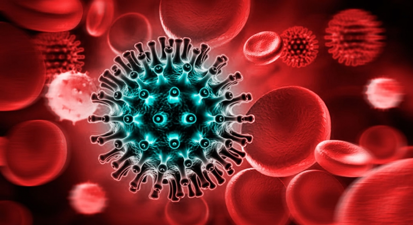

A AIDS (Síndrome da Imunodeficiência Adquirida) é uma doença causada pelo vírus da imunodeficiência humana (HIV) e caracterizada pelo enfraquecimento do sistema imunológico, aumentando o risco do surgimento de outras doenças oportunistas.
HIV é a sigla em inglês do vírus da imunodeficiência humana (human immunodeficiency virus), que é o causador da AIDS. AIDS, no entanto, se trata do estágio mais avançado da infecção por HIV.
O HIV é uma infecção sexualmente transmissível, que também pode ser contraída pelo contato com o sangue infectado e de forma vertical, ou seja, a mulher que é portadora do vírus HIV o transmite para o filho durante a gravidez, parto ou amamentação.
É importante destacar que ter HIV não é o mesmo que ter Aids, pois há muitos soropositivos que vivem anos sem apresentar sintomas e sem desenvolver a doença. O vírus pode ser transmitido “a outras pessoas pelas relações sexuais desprotegidas, pelo compartilhamento de seringas contaminadas ou de mãe para filho durante a gravidez e a amamentação, quando não tomam as devidas medidas de prevenção.” Por isso, é essencial se proteger em todas as situações e fazer regularmente o exame.